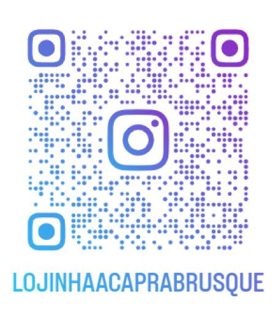

Somos uma organização dedicada ao resgate, proteção e reabilitação de animais em situação de vulnerabilidade. Nosso compromisso é proporcionar amor, cuidado e um lar seguro para cães e gatos abandonados ou em risco. Atuamos com resgates, adoções responsáveis e conscientização sobre bem-estar animal, sempre buscando um futuro melhor para cada vida que cruzamos. Junte-se a nós nessa missão de transformar histórias e espalhar o respeito aos animais!
Nossa missão é resgatar, proteger e reabilitar animais em situação de abandono ou maus-tratos, proporcionando a eles cuidado, amor e a chance de um novo lar. Trabalhamos para promover a adoção responsável e a conscientização sobre bem-estar animal, incentivando o respeito e a compaixão por todas as vidas
A cachorrinha Luna foi encontrada em uma noite chuvosa, encolhida em um canto, com o olhar triste e o pelo sujo. Assustada e debilitada, ela mal conseguia se mover. Resgatada por nossa equipe, recebeu cuidados veterinários, alimentação e, principalmente, carinho. Com o tempo, Luna voltou a confiar nos humanos. Seu olhar, antes apagado, brilhou novamente. Então, um dia especial chegou: Ana, uma jovem que sempre sonhou em ter um cãozinho, conheceu Luna. Foi amor à primeira vista! Hoje, Luna vive cercada de amor, brinca no quintal e dorme quentinha ao lado de sua nova família. Sua história é um lembrete de que todo animal merece uma segunda chance.
Acesse a nossa lojinha através do link:
Lojinha AcapraOu escaneie nosso QRCode

Maus-tratos são crimes que envolvem violência física, psicológica, negligência ou abandono, em animais. No
Brasil, são punidos pelo Código Penal (artigo 136) e pela Lei de Crimes Ambientais (Lei nº 9.605/98, artigo
32). Denuncie:
📞 Disque 100: Serviço gratuito para denúncias de violações de direitos humanos.
🏛 Delegacias Especializadas: Procure delegacias da mulher, da criança e do adolescente ou de meio
ambiente.
🚓 190: Em casos de emergência, acione a polícia.
📱 47 98474-9433
📸 Instagram: @acaprabrusquesc